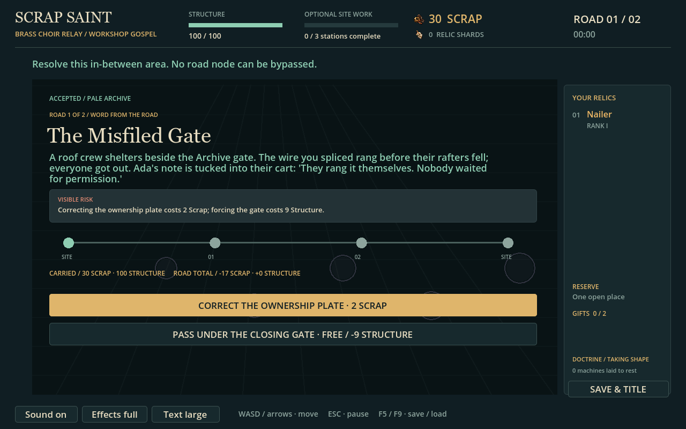

Ada responds to the Brass wire decision; a later roof-crew account on either connected road shows what happened. Splice and cross each have a response. Risks, costs and combat warnings remain unchanged.
ARCHIVE SPLICE LARGE

Configured native captures at 1280×800, seed147, normal and large text. Boss completion and the starting road budget are supplied fixtures. Text selection follows real road commands and saved flags. This is not a human playtest.